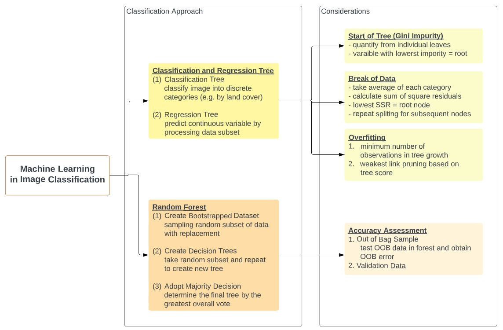
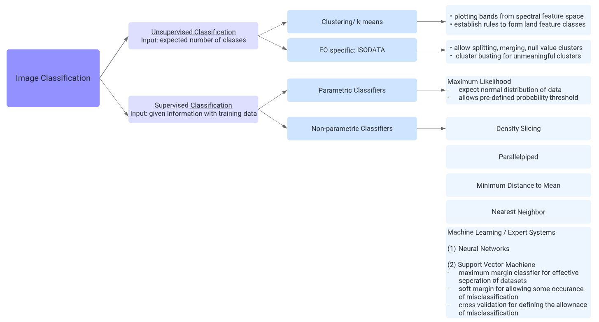
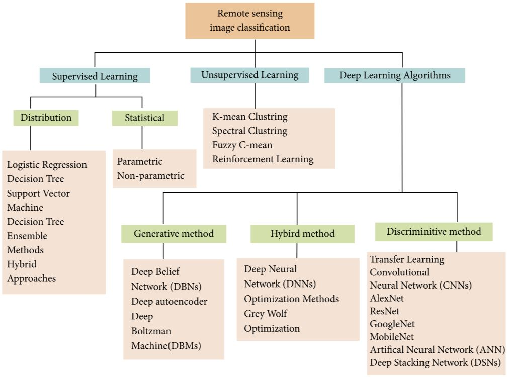
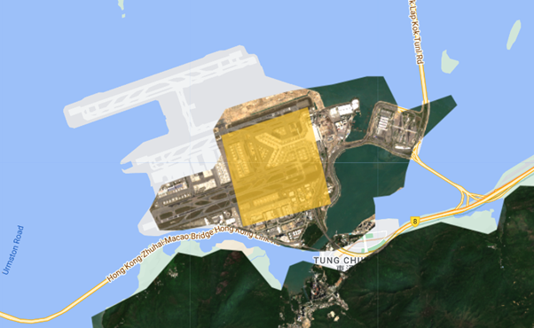
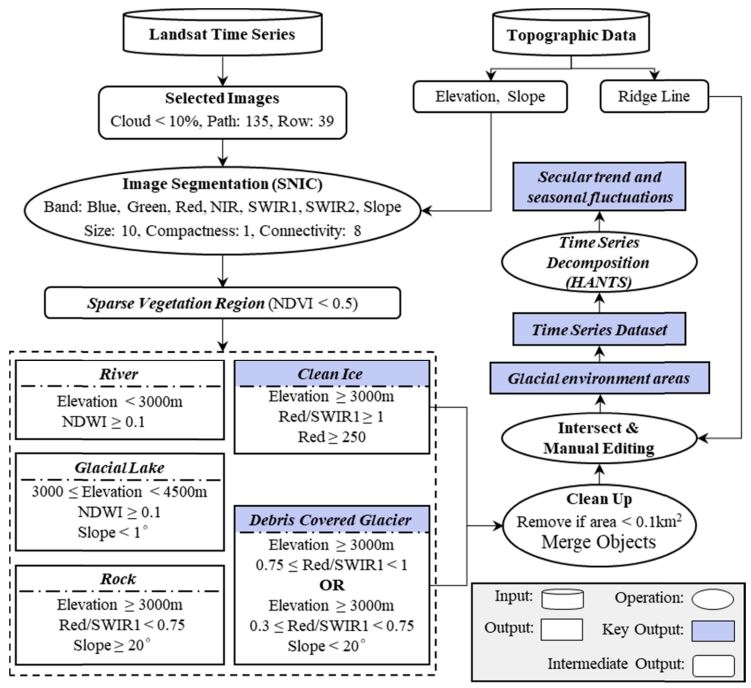

6 Week 6: Classification
6.1 Summary
This week lecture and practical discussed the image classification techniques in remote sensing and how it can be applied in different environmental studies. Content focuses on the utilisation of machine learning in categotising areas based on spectral reflectance or texture. The figure below summarised the approach discussed in lecture:

When performing classification with machine learning, several considerations should be account. These considerations helps in defining parameters for model training and ensure the accuracy of outcome.
On the other hand, 2 types of classification is introduced:unsupervised classification and supervised classification. This week lecture introduced several methods in each classification type:

Recent research focuses on the use of machine learning/ expert systems or hybrid approach in image classification. Mehmood et al. (2022) provided a more detailed summary of the basic divisions in learning techniques, especially for deep learning models.

Apart from considering the type of techniques to apply, user also needs to decide between pixel-based, object-based and scene-based classification methods. Mehmood et al. (2022) point out that as the spatial resolution of remote sensing images has drastically increased, the popularity of using pixel-based has reduced and research trends changes towards applying object-based classification.
In practical, supervised classifier (CART and random forest) are attempted in three different scenarios, where:
1. Training CART classifier without specifying % of training data
2. Training random forest classifier with specifying % of training data
3. Training random forest classifier with specifying % of training data and greater amount of polygons
The questions I have for this practice is regarding the pre-processing of EO data and presentation of output. To improve the filtering result of cloud mask, I tried the median approach for taking only the middle value of each pixel. Although this approach can remove clouds due to its high reflectiveness, information in pixels will be generalised and causing lost of a lot of data. Alternatively, more advanced cloud detection or filtering cloud percentage in data source may be more effective to ensure the exclusion of clouds while retaining most information.
For my analysis of Hong Kong, I also experienced that the clipped image from FAO GAUL global admin layers may not completely display part of the area. Problem occurs at Chek Lap Kok International Airport where a portion was clipped away. An alternative is to use boundary shapefile from official data source or carefully select an appropriate dataset from catalog.

6.2 Application
Based on this week’s content, I would like to study the application of CART classifier and random forest classifier, then focus on the research trend in applying object-based classification.
6.2.1 CART Classification
To classify the land cover of Xinjiang effectively, Li et al. (2023) adopted CART from decision tree algorithm due to its ability in analysing the relationship between multiple attributes for generating prediction model. Authors extracted 4 kind of features (spectral features, vegetation indices, water index & radar backscattering coefficient) from pre-processed high resolution images, then engaged gini coefficient, maximum tree depth, and pruning in the model development. A focus in this piece of research is the identification of high spectral reflectance features, like buildings with metal and cement rooftops. Authors approached this concern by using SAR images for detecting buildings/ residential regions and optical image for classifying different types of rooftop along with NDMRI index.
This research presents the importance of comprehensive considerations during project design, which characteristics of features should take into account and apply appropriate input data accordingly. Accuracy of machine learning model is greatly determined by the quality of data input. Thus, supporting the research with observations other than multi-spectral image should also be considered.
6.2.2 Random Forest Classification
With the need of compiling geological map series in Tunisia, Albert and Ammar (2021) proposed the use of random forest classification to automate mapping process with open source satellite imagery. The input data of model was collected at the Jebel Meloussi area by integrating remotely sensed data with topographic elevation data to derive spectral indices (NDVI &d geological indices) and morphometric variables (topographic wetness index & topographic ruggedness index). Authors also applied a variety of techniques to optimise model parameters, such as estimating probability of estimation by out of bag method and evaluating the cross-correlation of the variables.
Application of machine learning and remotely sensed data in geological mapping has more concerns than LULC mapping, as cartographic materials should be included to describe geological features characteristic morphology. Authors demonstrated a lot of effort in deriving the right choice of predictors and parameters by considering: - highlight of iron-bearing minerals in lithological variables - stronger predictor variables from available data in mean decrease gini values - effectiveness of predictor variables in characterising different geological categories - estimation probability from different sample method - user and producer accuracy test This study provide a good example on how to structure image classification by the detailed description on concerns and way of approach for variable selection, while accuracy assessment was performed to ensure model’s accuracy.
6.2.3 Object-based Classification
Study by Guo et al. (2021) used object-based classification with Landsat time series data to monitor the spatiotemporal changes of glacier and snow fluctuations at Namcha Barwa–Gyala Peri (NBGP) massif, where most serious glacier retreat is experienced under climate change. The research used object-based classification because of its ability in discriminating objects with similar spectral features and adaptive processing units that applicable for multisource data. Similar to the observation mentioned by Mehmood et al. (2022), Guo et al. (2021) indicated that pixel-based classification restricts the use of classification features and result in ‘salt and pepper’ effects. Using Landsat and topographic data, debris-glacier is classified with the following procedures:

A critical challenge of this study is the need of defining threshold for implementing multiple hierarchical level rule-based classification. Other than using NDVI to extract non-vegetation or sparse vegetation region, analyst need to have a substantial background understanding of feature characteristics physically and spectrally, such as defining elevation threshold from glacier terminus and slope restriction of debris-covered glacier. Therefore, the glacial environment dynamics is comparatively complex and challenging to classify, especially when segments in object-based classification is generated from the criteria of homogeneity.
6.3 Reflection
Having a range of classification approach available, it might be quite overwhelming when selecting a classification technique to work on. Relatively abundant justification regarding method selection is provided in Guo et al. (2021)’s study, which object-based classification stands out from pixel-based method due to its consideration of homogeneity. This is also an interesting point that discussed at the last part of week 6 lecture. User should clearly identify the need and purpose of applying image classification, the suitability of applying image classification with EO data for the research area, and type of classification to be used (conventional/ fuzzy & pixel-based/ object-based). Application of machine learning in remote sensing is definitely an area that worth explore on, but more literature review and further study is vital to have thorough understanding about when and how a technique can be applied for different research purpose.